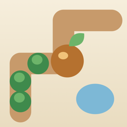

Tilt Maze Garden
Tilt your phone to roll a seed through a garden maze. Plants grow where you've rolled and stay even when you fall, so every attempt reshapes the puzzle. Ten hand-made gardens, a new Daily Garden every day, and a level editor for sharing your own.
Need help? Email support@soumyamahunt.com. Please include your device model and iOS version if something isn't working.
Frequently asked questions
The seed doesn't roll the way I'm holding the phone
Hold the phone at the angle you like to play, then open the pause menu and tap Recalibrate tilt. That angle becomes "flat". You can also change Tilt sensitivity in Settings.
Can I play without tilting?
Yes. Turn on Settings › Touch controls and drag anywhere on the screen to steer. Audio cues (a drip near water, a prick near thorns, a chime next to buds) are always on while VoiceOver is running.
I'm walled in by hedges
Tap Undo to rewind your last fall, Clear to wither the hedges around you, or Replant to start the garden again.
How do I share a garden I built?
In Gardens, open the garden in the editor and tap the QR button. Friends can scan the code with the Camera app, or open the link, to play it.
How do I restore Remove Ads on a new device?
Open Settings › Ads and tap Restore Purchases, using the same Apple Account you bought it with.
Why do I see ads?
Ads keep the game free. Banners only appear on menus and full-screen ads only between gardens, never while you're rolling. Reward ads (hints and clearing hedges) only play when you choose them. The one-time Remove Ads purchase turns off banners and between-garden ads and makes rewards free. Where the law requires it, you can change your ad privacy choices in Settings › Privacy.
Support
Remove Ads supports the game from inside it. You can also support all my apps on Patreon, which helps cover the developer account and keeps them maintained.